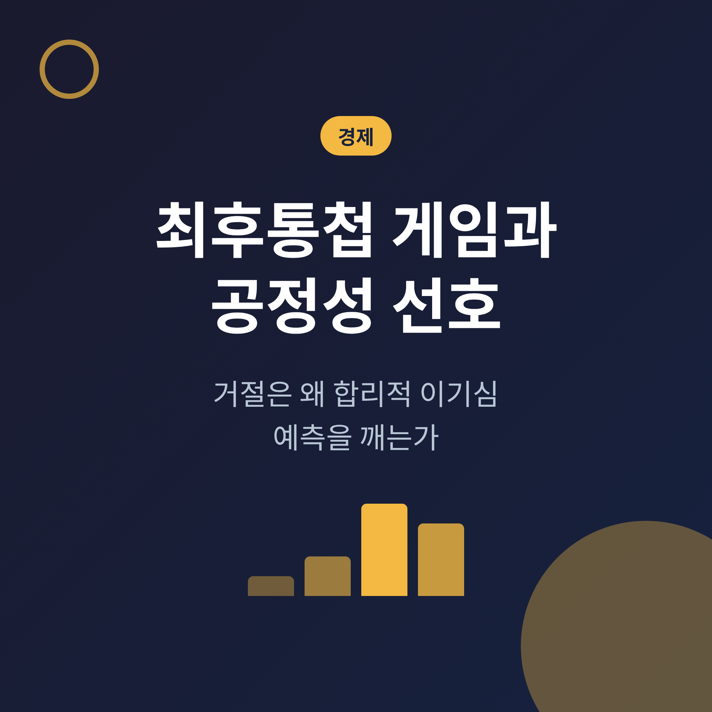
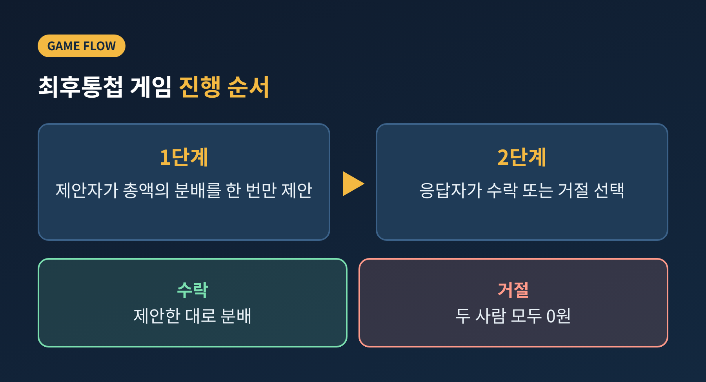
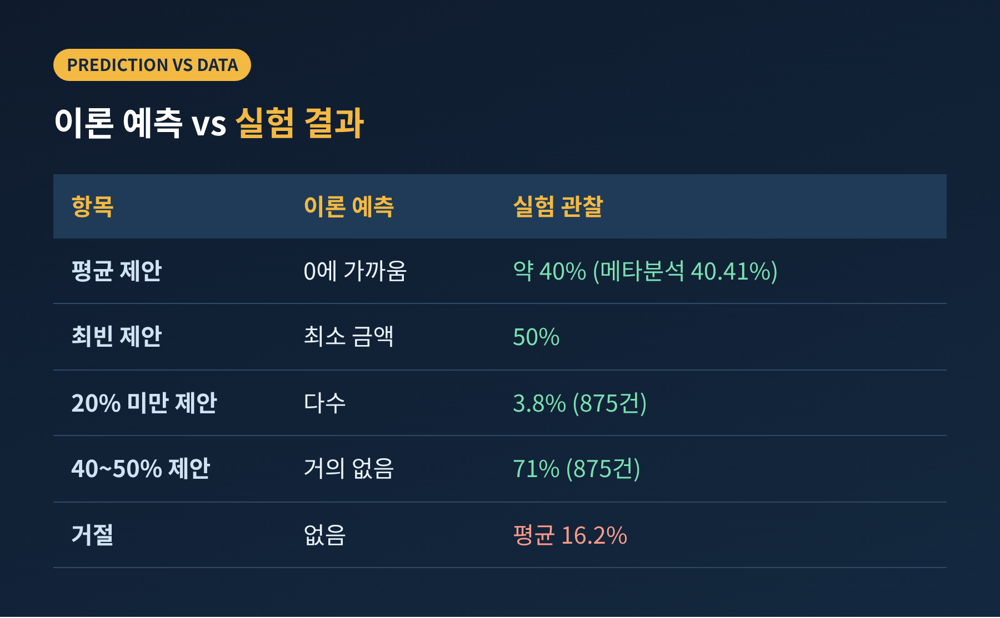
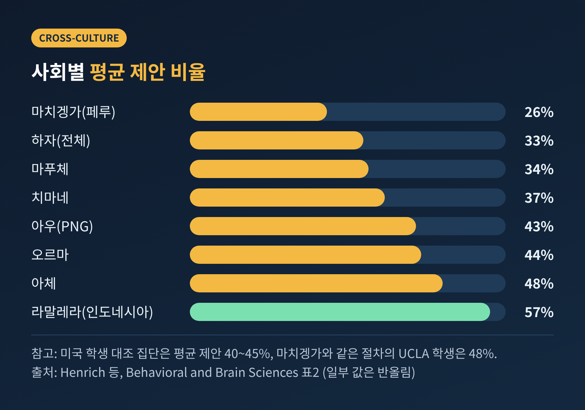
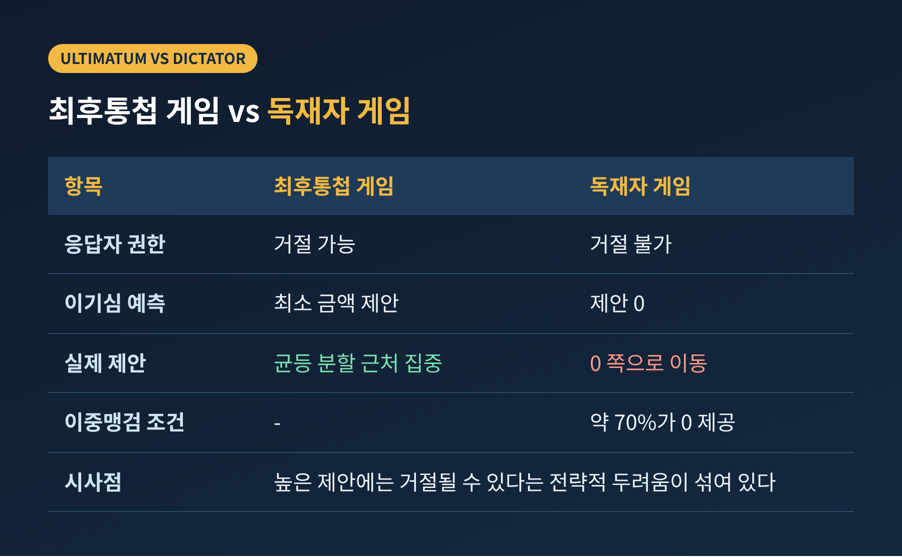
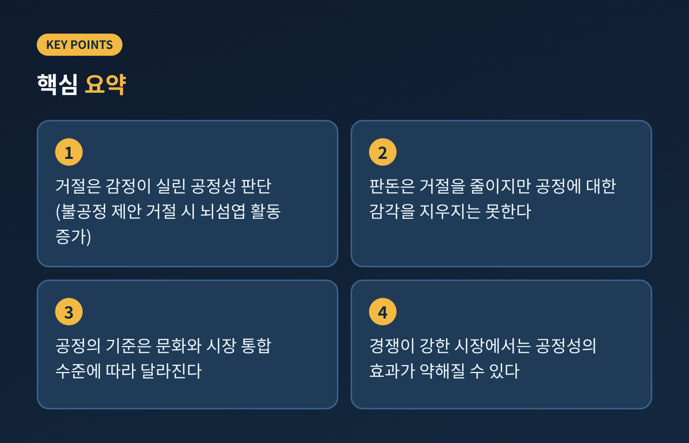

최후통첩 게임과 공정성 선호, 거절은 왜 이기심 예측을 깨는가

오늘은 최후통첩 게임을 통해 '합리적 이기심'이라는 경제학의 기본 가정이 어디에서 흔들리는지 정리해 보려 합니다.
이론은 거의 0원에 가까운 제안도 받아들여야 한다고 말하지만, 실험실의 사람들은 그렇게 움직이지 않았습니다.
1982년 첫 실험부터 문화 간 비교, 독재자 게임과의 대비, 제도 설계에 주는 시사점까지 차례로 살펴보겠습니다.
■ 최후통첩 게임, 규칙은 단순합니다
두 사람이 있습니다. 한 사람은 제안자, 다른 사람은 응답자입니다.
제안자가 정해진 금액을 어떻게 나눌지 한 번만 제안합니다.
응답자가 수락하면 제안대로 나누고, 거절하면 두 사람 모두 0원을 받습니다.

이 구조에서 이론이 내놓는 예측은 분명합니다.
응답자는 0원보다 큰 금액이면 무엇이든 받는 편이 이득입니다. 거절하면 0원이 되기 때문입니다.
이를 예상하는 제안자는 응답자에게 최소한만 주고 나머지를 가져갑니다. 경제학에서는 이를 부분게임완전균형이라고 부릅니다.
Güth, Schmittberger, Schwarze가 1982년에 발표한 원논문의 설정에서도 균형 예측은 응답자에게 0을 주는 것이었습니다.
■ 실험실에서 벌어진 일
결과는 예측과 달랐습니다.
Güth 등의 실험에서 비경험 피험자의 최빈 제안은 50%였고, 평균은 37%였습니다. 21건 중 7건이 정확히 절반이었습니다.
관찰된 제안은 대체로 총액의 20%에서 60% 사이에 분포했고, 총액의 약 20% 미만인 제안은 거절되는 경향이 있었습니다.
이후 연구도 같은 방향이었습니다.
Roth 등이 미국, 슬로베니아, 일본, 이스라엘에서 진행한 연구에서는 첫 판의 최빈 제안이 네 나라 모두 1,000 중 500이었습니다.
여러 연구를 모아 875개 관측으로 정리한 자료에서는 20% 미만 제안이 3.8%에 그쳤고, 40~50% 제안이 71%였습니다.
37편의 논문, 25개국에서 나온 75개 결과를 묶은 Oosterbeek 등의 메타분석도 비슷합니다.
제안 비율의 평균은 40.41%, 평균 거절률은 16.20%였습니다.

한 가지 짚어둘 점이 있습니다.
제안자 쪽 행동은 이기심이 아니라 거절당할 위험을 계산한 결과일 수도 있습니다.
거절이 두려워 후하게 주는 것이라면, 제안자는 이기적이어도 결과는 공정해 보입니다.
그러나 핵심 수수께끼는 응답자 쪽에 남습니다. 공짜 돈을 포기하면서까지 불공정한 제안을 벌주는 사람은 왜 존재할까요.
■ 판돈을 키우면 사라질까
가장 먼저 나오는 반론은 이것입니다. 걸린 돈이 작아서 그럴 뿐이라는 것입니다.
1달러쯤은 버려도 되지만, 큰돈이라면 응답자도 계산기를 두드릴 것이라는 생각입니다.
실제로 검증이 이루어졌습니다.
Hoffman 등은 판돈 10달러에서 제안의 83%가 40~50% 구간이었고, 20% 미만은 없었다고 보고했습니다. 100달러로 올리자 40~50%는 74%, 20% 미만은 4%였습니다.
Slonim과 Roth는 슬로바키아에서 판돈을 25배까지 바꿔 실험했습니다. 경험이 적은 제안자의 행동은 판돈에 크게 흔들리지 않았고, 판돈이 클수록 거절은 덜 빈번했습니다.
메타분석도 같은 결론입니다. 판돈이 커지면 제안 비율은 소폭 하락하지만 가장 작은 판돈에서 가장 큰 판돈까지 6%p가 되지 않았고, 거절률은 유의하게 낮아졌습니다.
정리하면 이렇습니다. 판돈은 거절을 줄입니다. 그러나 공정함에 대한 감각을 지우지는 못합니다.
■ 문화에 따라 공정의 모양이 달랐습니다
문화가 달라도 같은 결과가 나올까요.
Joseph Henrich 연구진은 15개 소규모 사회에서 같은 게임을 해 보았습니다. 어느 집단도 이기적 예측과 일치하지 않았지만, 평균 제안은 26%에서 약 57~58%까지 크게 달랐습니다.
페루의 마치겡가는 가족 단위로 생활하는 집단입니다. 평균 제안은 26%였고, 제안의 75% 이상이 30% 미만이었습니다.
그런데 거절은 단 1건뿐이었습니다. 같은 절차로 한 UCLA 학생 대조군은 평균 48%를 제안했습니다.
헨리크는 마치겡가 사람들에게 공짜 돈을 거절한다는 발상이 터무니없게 보였다고 전합니다.
인도네시아의 고래잡이 사회 라말레라는 정반대였습니다. 제안자의 63%가 반반을 제안했고, 나머지 대부분은 절반을 넘겼습니다.
고래를 미리 정해진 몫대로 나누는 관습과 연결해서 해석됩니다.
파푸아뉴기니의 아우와 궁나에서는 낯선 일이 일어났습니다. 너무 적은 제안뿐 아니라 너무 후한 제안도 비슷한 비율로 거절되었습니다.
선물을 받으면 갚아야 할 사회적 빚이 생기는 관습 때문이라는 설명이 있습니다.

이 편차는 무엇으로 설명될까요.
연구진은 협력에서 얻는 보상 수준과 시장 통합 정도를 꼽았습니다. 두 변수가 사회 간 평균 제안 차이의 약 47%를 설명했습니다.
반면 개인의 성별, 나이, 재산, 교육 수준은 일관된 예측 변수가 되지 못했습니다.
낯선 사람과도 자주 거래하고 협력해야 하는 사회일수록 공정한 몫의 규범이 더 단단했다는 해석이 됩니다.
다만 이 해석에는 단서가 붙습니다.
Kevin McCabe 등은 집단 차이의 일부가 실험을 설명하고 운영한 방식의 차이에서 나왔을 가능성을 지적했습니다.
또 Oosterbeek 등의 메타분석은 주로 산업화된 국가 사이를 비교한 것인데, 지역 간 제안 비율의 차이가 유의하지 않았습니다. 응답자의 거절률만 아시아가 미국보다 약 13%p 높았을 뿐입니다.
소규모 사회까지 넓히면 차이가 크고, 비슷한 사회끼리는 작다는 점이 함께 읽혀야 합니다.
■ 독재자 게임과의 대비
그렇다면 후한 제안은 순수한 너그러움일까요. 독재자 게임이 이 질문을 가려줍니다.
독재자 게임에서는 응답자가 거절할 수 없습니다. 제안자가 정한 대로 끝납니다.
이기심 예측은 제안 0입니다.
Forsythe 등이 1994년에 비교해 보니, 실제 돈이 걸리면 독재자 게임의 제안은 0 쪽으로 크게 이동했습니다.
반면 최후통첩 게임의 제안은 여전히 균등 분할 근처에 몰렸습니다.
Hoffman, McCabe, Smith의 이중맹검 조건에서는 독재자의 약 70%가 아무것도 주지 않았습니다.

이 대비가 말해주는 바는 분명합니다.
최후통첩 게임의 높은 제안에는 이타심만이 아니라, 거절될 수 있다는 전략적 두려움이 섞여 있습니다.
다만 독재자 게임에서도 모든 사람이 0을 주지는 않았습니다. Fehr와 Schmidt가 정리한 자료로는 약 20%가 0을, 약 60%가 0과 절반 사이를, 약 20%가 정확히 절반을 주었습니다.
이타심도, 전략도, 둘 다 실재한다는 뜻입니다.
■ 불평등 회피라는 설명
Fehr와 Schmidt(1999)는 이를 하나의 효용함수로 설명했습니다.
사람은 자기 몫만이 아니라 상대와의 격차에도 반응합니다. 상대가 더 많이 가져갈 때 느끼는 불쾌감(α)이, 내가 더 많이 가질 때의 불편함(β)보다 크다고 가정합니다.
이 모형에서 응답자의 수락 하한은 α/(1+2α)입니다.
α가 1/3이면 하한은 20%이고, α가 0.75이면 30%입니다. 그 아래 제안은 거절됩니다.
β가 0.5 이상인 제안자는 아예 반반을 제안합니다.
사람마다 α와 β가 다르다고 두면, 실험에서 보이는 40~50%의 집중이 비슷하게 재현됩니다.
이 이론은 한계도 분명히 인정합니다.
선형 모형으로는 독재자 게임에서 나타나는 중간 값의 제안을 설명하지 못합니다. 논문 자체가 비선형 형태가 필요하다고 언급합니다.
신경과학도 같은 그림을 보여줍니다.
Sanfey 등(2003)의 fMRI 연구에서 불공정한 제안은 감정과 관련된 전측 뇌섬엽과 인지와 관련된 배외측 전전두피질을 활성화했습니다.
불공정한 제안을 거절할 때 뇌섬엽의 활동이 더 컸습니다. 거절은 단순한 계산 오류가 아니라 감정이 실린 판단이라는 해석에 힘을 싣습니다.
■ 행동경제학과 제도 설계에 남기는 질문
여기서부터는 연구 결과를 바탕으로 한 저의 해석입니다.
첫째, 사람을 이기적 계산기로 가정한 제도는 현실에서 어긋날 수 있습니다.
가격이나 임금, 수수료를 정할 때 상대가 불공정하다고 느끼면, 손해를 감수하고 거부하는 사람이 일정 비율 존재한다고 보아야 합니다.
둘째, 공정성 선호는 환경에 따라 힘이 달라집니다.
Fehr와 Schmidt의 모형은 시장 경쟁이 강하면 공정성의 효과가 사라질 수 있음을 보여줍니다. 제안자들끼리 경쟁하면 잉여가 모두 응답자에게 가는 균형이, 응답자들끼리 경쟁하고 이기적 응답자가 하나라도 있으면 제안 0의 균형이 나옵니다.
반대로 한 사람이 잉여를 좌우할 수 있는 일대일 협상에서는 공정성 규범이 다시 힘을 얻습니다.
셋째, 공정의 기준은 보편이 아니라 맥락입니다.
마치겡가와 라말레라의 사례는 사회마다 '당연한 몫'이 다를 수 있음을 알려줍니다. 한 사회에서 통하는 설계를 다른 사회로 그대로 옮기기는 어렵습니다.
한계도 있습니다.
실험은 익명의 일회성 상황이고, 현실의 협상은 관계와 평판이 얽혀 있습니다. 결과를 현실에 곧바로 대입하는 일은 조심스러워야 합니다.

정리하면 이렇습니다.
최후통첩 게임에서 보이는 거절은 비합리의 증거라기보다, 합리성의 정의가 좁았다는 신호에 가깝습니다.
"사람은 몫의 크기만이 아니라 몫이 나뉘는 방식에도 값을 매긴다."
0원을 받느니 불공정한 1원을 거절하겠다는 선택을, 여러분은 어리석다고 하시겠습니까. 저는 그 거절 속에 사회가 유지되는 힘이 있다고 생각합니다.